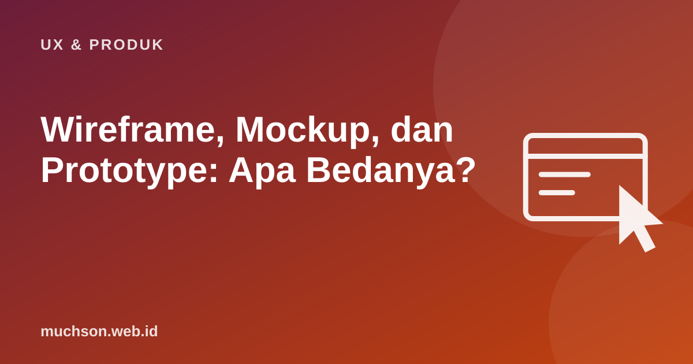

Beranda › Artikel › UX & Produk
UX & ProdukWireframe, Mockup, dan Prototype: Apa Bedanya?
Klien meminta "desain" dan tim bingung: apakah sketsa kotak-kotak, tampilan berwarna lengkap, atau sesuatu yang bisa diklik? Ketiga istilah ini sering dipakai bergantian, padahal masing-masing punya tujuan berbeda. Memilih yang tepat menghemat waktu dan mencegah perdebatan warna di tahap yang salah.

Tiga tingkat kesetiaan (fidelity)
| Aspek | Wireframe | Mockup | Prototype |
|---|---|---|---|
| Tujuan | Struktur dan tata letak | Tampilan visual | Interaksi dan alur |
| Detail | Kotak abu-abu, teks contoh | Warna, tipografi, gambar asli | Bisa diklik, berpindah layar |
| Waktu buat | Menit sampai jam | Jam sampai hari | Jam sampai minggu |
| Diskusi yang tepat | "Informasi apa yang perlu ada?" | "Apakah sesuai brand?" | "Apakah pengguna bisa menyelesaikan tugas?" |
| Alat | Kertas, Balsamiq, Figma | Figma, Sketch | Figma, ProtoPie, kode HTML |
Mengapa urutannya penting
Menunjukkan desain berwarna lengkap terlalu awal membuat diskusi tersangkut di warna dan foto, padahal struktur halamannya belum tepat. Wireframe yang sengaja "jelek" mengundang masukan tentang hal yang lebih mendasar.
Kapan memakai yang mana
Prototype dengan kode
Untuk interaksi yang kompleks, data nyata, atau perilaku AI, prototipe di Figma sering terbatas. Prototipe HTML/JavaScript sederhana, kini lebih cepat dibuat dengan bantuan AI, memungkinkan pengguna mencoba dengan data dan perilaku yang lebih realistis. Tantangannya: jangan sampai tim menganggapnya kode siap produksi.
Beri label jelas pada setiap artefak: "Wireframe, bukan desain final" atau "Prototipe untuk uji, data palsu". Ini mencegah salah paham dengan klien dan pemangku kepentingan.
Tanya jawab
Apakah selalu harus melewati ketiga tahap?
Apa itu design handoff?
Apakah developer perlu belajar wireframe?
Sumber dan bacaan lanjut
- Nielsen Norman Group: UX Prototypes, Low Fidelity vs. High Fidelity
- Figma Help Center: Guide to prototyping in Figma
- Apa itu UI/UX design (artikel terkait)